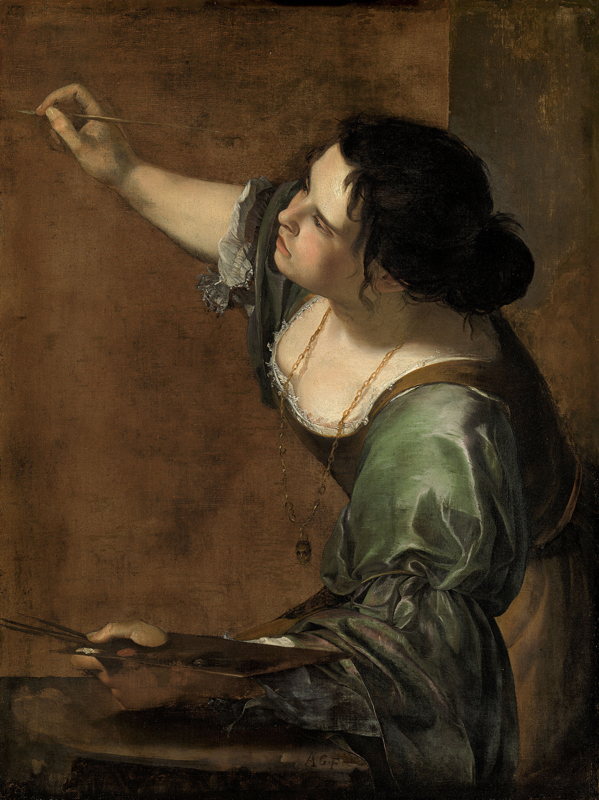

The World Wide Web (WWW), commonly known as the Web, is an information system where documents and other web resources are identified by Uniform Resource Locators (URLs, such as https://example.com/), which may be interlinked by hyperlinks, and are accessible over the Internet. The resources of the Web are transferred via the Hypertext Transfer Protocol (HTTP), may be accessed by users by a software application called a web browser, and are published by a software application called a web server. The World Wide Web is not synonymous with the Internet, which pre-dated the Web in some form by over two decades and upon the technologies of which the Web is built.
| 가족 구성원 | 좋아하는 빵 | 취미 |
| 나 | 소보로 | 독서, 산책, 불어 공부 |
| 세나 | 먼지 | 낮잠, 넷플릭스, 코딩 공부, 스텝퍼 |
| 엄마 | 다 | 낮잠, 음식물 쓰레기 버리기 |
| 아빠 | 크림 | 소설 읽기, 청소 |
Artemisia Lomi or Artemisia Gentileschi was an Italian Baroque painter. Gentileschi is considered among the most accomplished seventeenth-century artists, initially working in the style of Caravaggio. She was producing professional work by the age of fifteen.
In an era when women had few opportunities to pursue artistic training or work as professional artists, Gentileschi was the first woman to become a member of the Accademia di Arte del Disegno in Florence and she had an international clientele.
